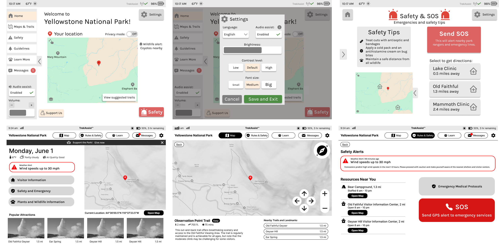
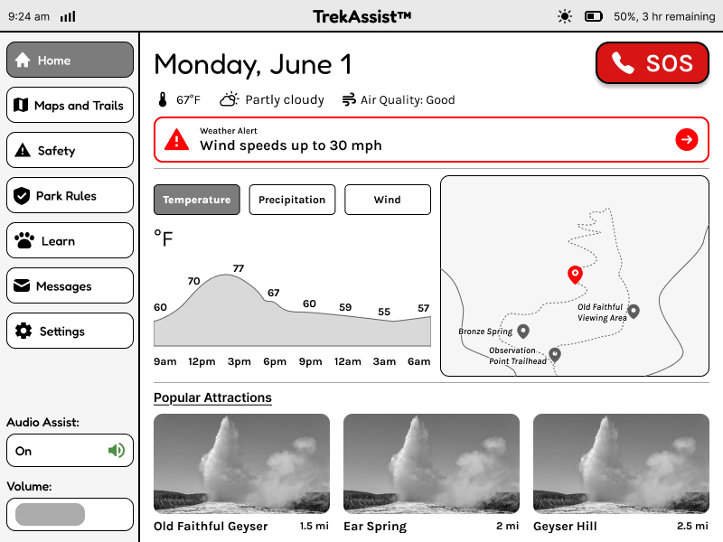
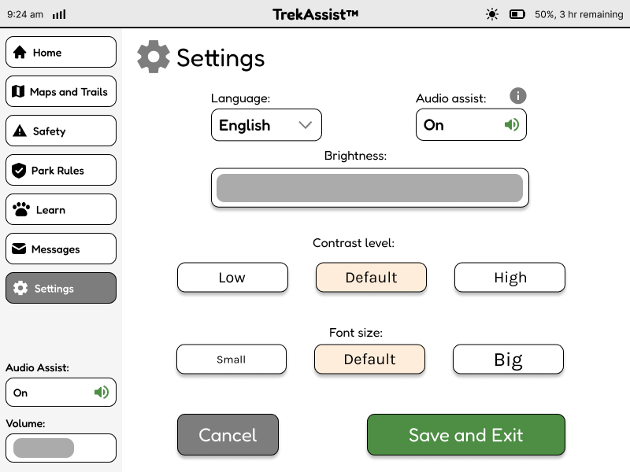
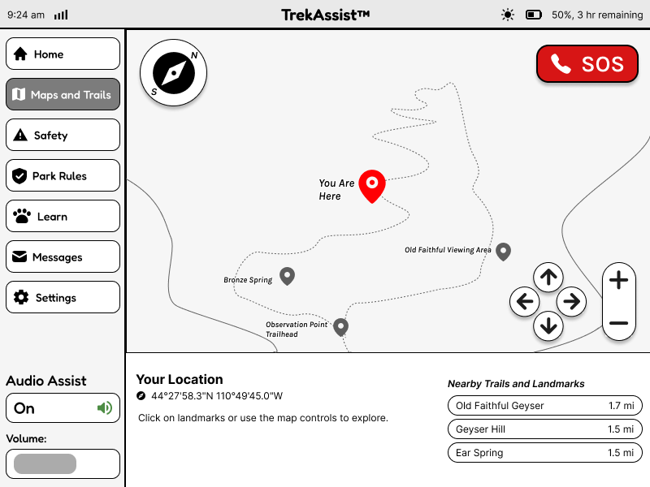
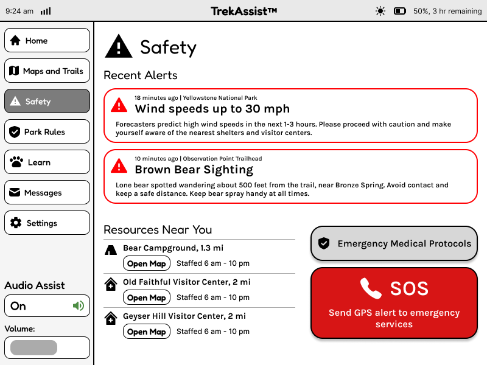
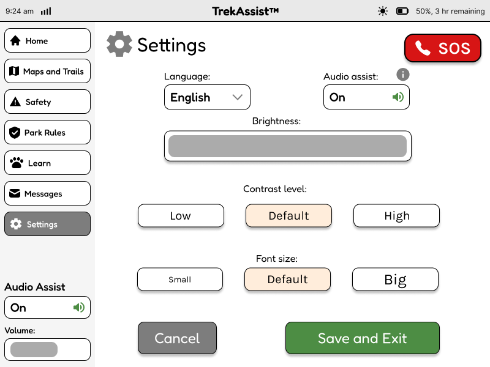
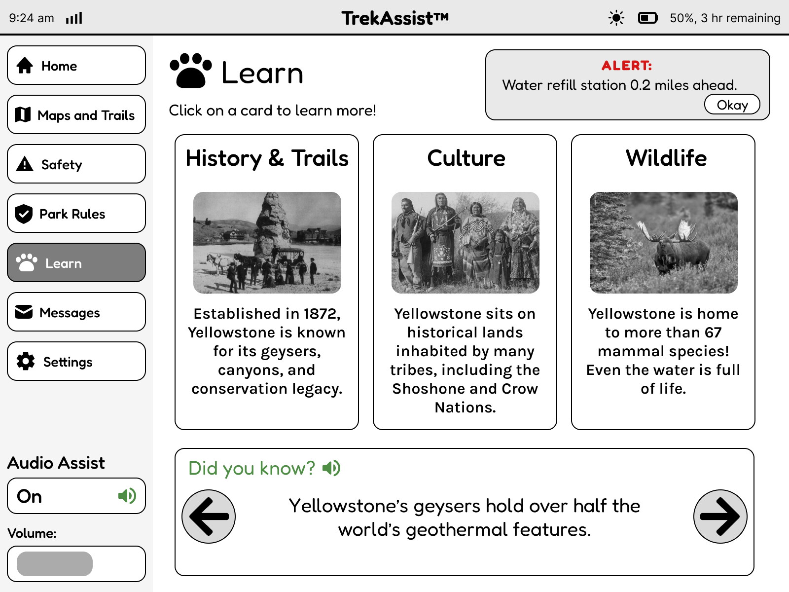
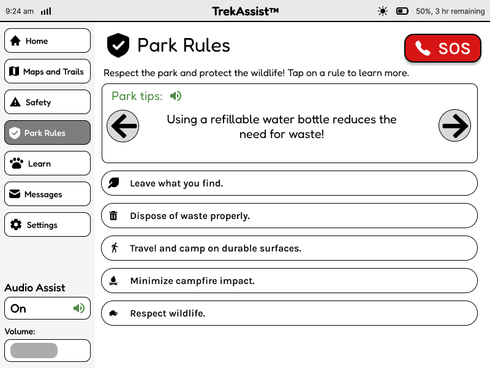
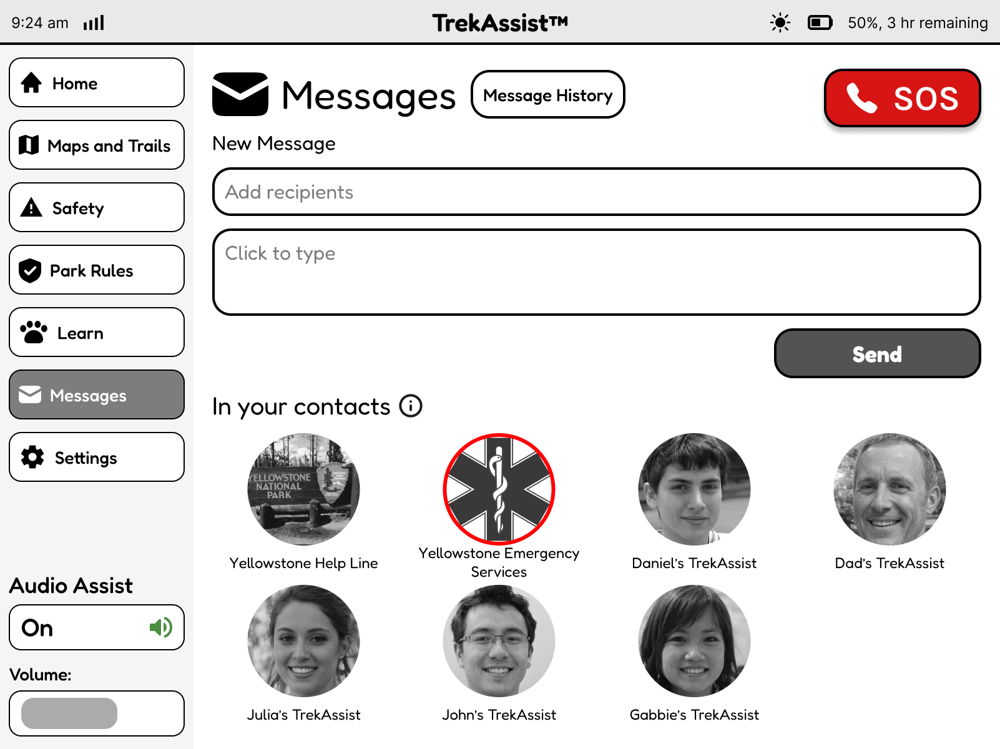

Problem Statement
Yellowstone National Park receives over 4 million visitors annually, many of whom are international tourists unfamiliar with the park's layout, safety guidelines, and cultural significance. Current navigation tools are limited to paper maps and smartphone apps that drain battery life and require constant connectivity.
How might we...
...create a sustainable, accessible navigation solution that enhances eco-tourism and park safety?
Project Context
As part of the final project for my Computer Interface Design class, we were tasked to create an innovative color e-ink display that uses relatively little energy and allows for
extended use on solar power energy that is collected using sensors at the top of the device.
Guidelines included:
• a resolution of 800 x 600 pixels, which will be presented on a 10-inch diagonal display
• limits on color use which can reduce the battery power
• a need for features that revolutionize the outdoor experience
Design Process
Ideation
Brainstormed solutions focused on e-ink technology for battery efficiency.
Wireframing
Created low-fidelity prototypes testing different needs for the device.
Refinement
Iterated based on feedback and accessibility standards.
User Testing
PMs conducted user testing to find out the strengths and weaknesses of the prototype. This revealed design suggestions that increase usability.
Ideation
Our team initially began by declaring our goals for the interface. Questions I found myself asking were, "How can we make this interface accessible for those who are first-time users and first-time visitors to Yellowstone?" and
"What would Yellowstone Park want to communicate to their visitors?"
Design Goals
• Minimal colors; reduce distractions (reference Kindle; grayscale w/ accents for alarms, important updates)
• Incorporate accessibility from the start (contrast, vision, language, etc)
• Minimise user interaction moments (‘clicks’, ‘swipes’ -> more reading, less navigation of interface)
• Reduce functionality/power saving options
• Transparency about device status (battery level, connection issues, battery time remaining)
Mission Points
• Encouraging more international tourism in American parks
• Ensuring the safety of park visitors by reducing incidents of forest fires, dehydration, and animal-related injuries
• Enabling park visitors to maintain their privacy during their visits
• Increasing the volume and amount of donations that park visitors make
With these goals in mind, I created the user flow with the help of my team:

Wireframing

During wireframe ideation, I prioritized a minimalist interface that works well on e-ink displays, with high contrast for outdoor visibility. We began wireframing by creating two design ideas. I ensured that the colors used were black, white, gray, and accent colors of red/green to create emphasis on certain features.
Refinement
After communicating with our product managers, I was able to gather feedback on the two designs and synthesized the strengths from each design into one cohesive TrekAssist interface.
Features included the side menu for easy accessibility, the black, white, gray, and red/green color scheme, and useful icons that highlight the functions of each button. This is especially useful for users who may be international tourists.
Two improvements I made from the initial designs were:
1. More obvious TrekAssist branding
2. Simple but cohesive design components



This was the prototype used for user testing:
User Testing
We tested 6 users with tasks that test the usability and navigation of our interface. Using the prototype shown above, the following tasks were given:
[Task 1] Find a Trail, [Task 2] Emergency SOS, [Task 3] Change Language, [Task 4] Navigating Learn Section, [Task 5] Adjust the settings for your preferences, and [Task 6] Test the audio assist.
The tasks were completed in a specific order to ensure that users were able to notice important details easily.
[Task 3] → [Task 5] → [Task 6] → [Task 4] → [Task 1] → [Task 2]
The results were measured with quantitative and qualitative methodologies to ensure a complete evaluation of the prototype.
Design Suggestions
Based on the study results, we have decided to make the following improvements on our design:
1. Distinguish interactive elements from static text, especially “Nearby Trails.”
2. Make the SOS button visible on all pages.
3. Increase size and contrast of icons.
4. Move the Audio Assist shortcut higher or style it with color/bolding to make it more visible.
5. Add an option to navigate to the “Learn” page from “Maps and Trails”, or include a short summary of the location on “Maps and Trails”.
I implemented the suggestions and improved the prototype. The final interactable prototype is shown and explained below:
Home Screen
This is the home page of the app. It showcases basic information, such as date, temperature and alerts. Additionally, there are previews of details from other screens, such as a small-scale map, some listed attractions. It is intended to serve as a shortcut to information that the user may need quickly.
- Real-time weather updates
- Quick access to safety alerts

Maps & Trails
This screen shows the Maps and Trails page, where users can explore different trails in the park. Clicking on each location pin shows details about the landmark, and users can navigate the map. There is a compass and emergency button included for ease of navigation and access.
- Clear location markers
- Trail length indicators

Safety & Emergency
This page ensures that users can have a safe trip to the park. With live weather alerts, more information on closeby resources, and SOS services, this page can be used to prepare for predicted emergencies or get help after unforeseen circumstances.
- Easily accessible SOS button
- Resource availability

Settings
This page allows the user to adjust the settings, such as language, audio assist, brightness, contrast level, and font size of the application.
- Intuitive buttons
- Easy setting customizability

Learn
This page serves as the entertainment and knowledge hub of the user’s trip. By providing sneak-peeks into the history, culture and wildlife of the area, the page is perfect for users who want to learn more about the sites they are visiting. As can be seen at the top of the page, all live alerts and reminders are still accessible outside of the Safety page too, ensuring that the user’s safety is prioritized.
- Immersive and interactable features
- Connected and cohesive design

Park Rules
This page presents information about the rules of the Yellowstone National Park to ensure that the visitors are aware of the expected behaviors and that the park can operate safely.
- Interactable buttons
- Engaging design elements

Messages
This page allows visitors to contact Emergency services or people they know to stay in touch during their trip or reach out in case of emergencies.
- Familiar design
- Intuitive buttons
Key Learnings
Through this case study, I learned how to make effective design choices that can communicate to users from anywhere in the world. I was able to practice visual design components to adjust to an e-ink screen.